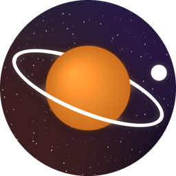

Cosmic Gist
New space discoveries, explained from the real research.
Cosmic Gist turns fresh research from NASA, ESA, ESO and observatories around the world into short, accurate videos: black holes, alien worlds, strange stars, our Sun and the early universe. Every video is built on the actual research paper, fact-checked against it, and credits the scientists and image sources.
Cosmic Gist (English)youtube.com/@cosmicgistt
ब्रह्मांड Gist (Hindi)youtube.com/@brahmandgist
The channels are produced with a small private tool that uploads the owner's own videos to YouTube and reads the channels' own statistics. It is not offered to the public.